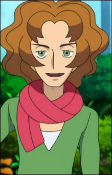
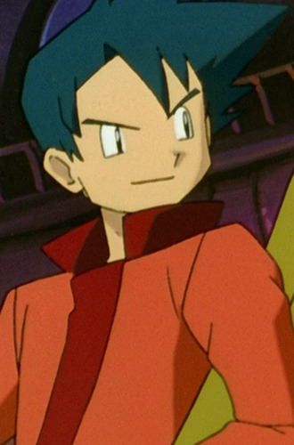
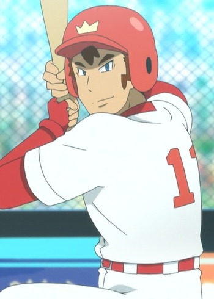

|  |
Burgh |
|
Burgh is an artist who is the Gym Leader of Castelia Gym. He specializes in Bug-type Pokemon. He cares for all Bug-type Pokemon(also other Pokemon) and defends for them as well. He is a talented prodigy who has his interest in designing clothes, gettiing inspiration from Bug Pokemon. |
|  |
Corey |
- Pokemon Movie 1: The First Movie
- Pokemon: Mewtwo Returns
|
Corey is a Pokemon trainer who was invited by Mewtwo to New Island along with other Pokemon trainer. He is a confident individual and boasts about the strengths of his Pokemon. Corey takes charge of a situation and is prepared to fight back. He is showed to be impulsive. |
 |
Mamoru Chiba |
- Sailor Moon
- Sailor Moon R
- Sailor Moon R: The Movie
- Sailor Moon R: Make-Up! Sailor Senshi
- Sailor Moon S
- Sailor Moon S: The Movie
- Sailor Moon Super S: The Movie
- Sailor Moon Super S
- Sailor Moon Super S Plus: Ami's First Love
- Sailor Moon Super S Special
- Sailor Moon Sailor Stars
- Sailor Moon Sailor Stars: Hero Club
- Sailor Moon Memorial
- Sailor Moon R Memorial
- Sailor Moon S Memorial
- Sailor Moon Super S Memorial
- Sailor Moon Sailor Stars Memorial
|
Mamoru Chiba/Tuxedo Mask is Usagi Tsukino's love interest. He is reincarnation of Prince Endymion. He is a kind and gentle man, being helpful and friendly around other. Mamoru was really to make fun of Usagi but now cares about her. |
|  |
Oluolu |
|
Oluolu is a famous Pokemon Base player from Melemele Island who plays for the Magikarp. He is a dgraduate of the Pokemon School. Like Samson Oak, Oluolu has a habit of making Pokemon gags that is accompanied by a visual imition of the Pokemon. His partner is a Snorlax. |


.jpg)